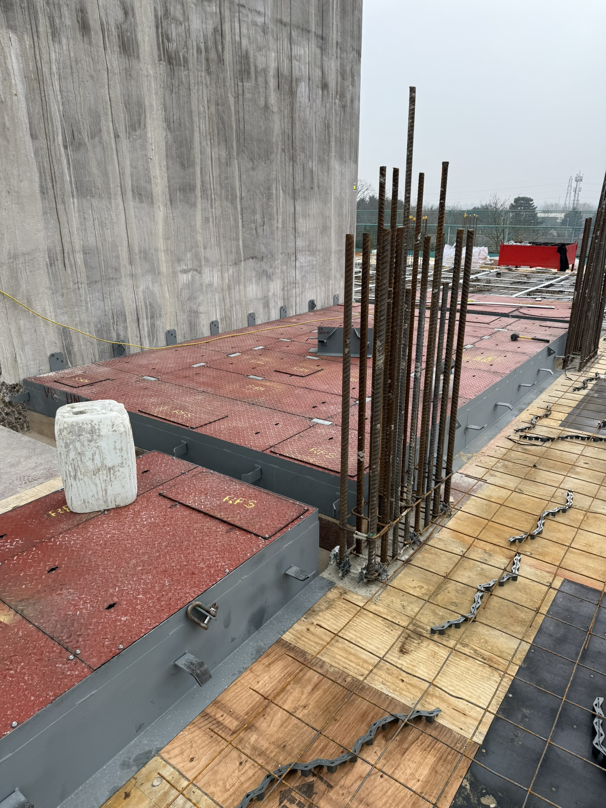
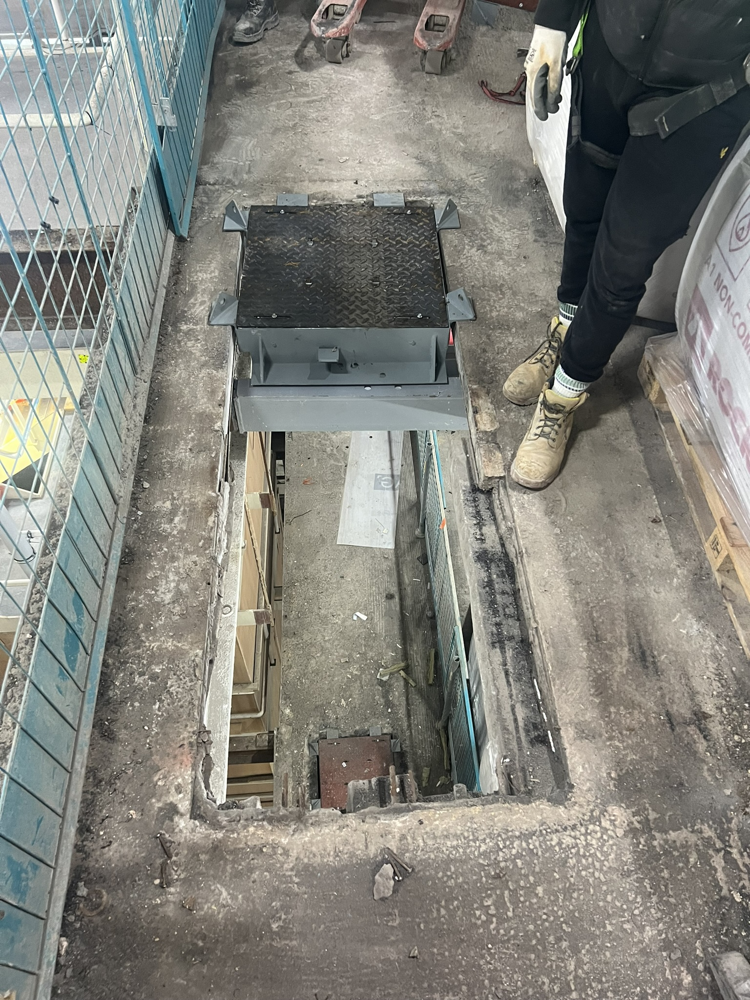

Modular Riser Flooring (MRF) Unit – Key Decision Routes
Click through the questions to find the appropriate route for your riser detail.
Legend
Decision point – yes/no or multiple-choice route must be selected.
Simple compliant process – straightforward route requiring minimal coordination.
Intensive process – complex / non-standard route needing higher coordination or engineering input.

New build
Unit installed as part of the primary construction sequence (prior to the slab pour).

Existing structure
Cut & carve opening within an existing slab (survey-led route with tolerances).